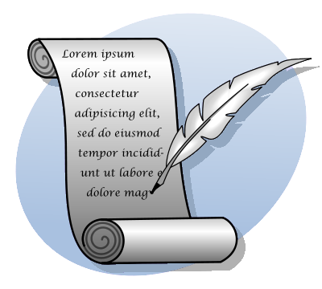

Writing

Texts on writing
American editors use Strunk and White’s little book of rules to check the elements of style. Read it, read it again, and again. Late editions do not improve over early editions.
If you need a verbose description that addresses technical issues, too, look for "Bugs in Writing."
Notes on the proposal memos
I used mostly the same dimensions as for your descriptive memo to evaluate your proposal memos. Instead of ’conclusions’ I assigned more points to the ’paragraph organization’ and ’ideas/content’ dimensions.
In general, your proposals are reasonably well written. Congratulations .
One recurring big problem concerns [paragraph] organization. Time and again memos bring ideas into the question/research paragraphs that are neither prepared in the descriptive paragraph nor prepared. If you wish to discuss aspect A of some paper in a paper, you need to introduce it first with a neutral description. Later you can explain how A is unclear or why A deserves additional investigation.
future tense in descriptive sentences
Your writings describe eternal truths. Stick to present tense until you explain what you intend to do beyond the scope of the paper.
passive voice or overuse of "to be", even in opening sentences
Active voice drives an essay; passive voice and boring verbs turn off readers. On occasion, passive voice facilitates the flow of sentences. There is no need to bend over and look for active alternatives everywhere but in general you are better off with active voice.
split infinitives
Some split infinitives are acceptable; some readers don’t mind.
Finally, pay attention to details. A memo needs a proper title. When someone specifies a specific layout, make sure your paper satisfies it. Some conferences and funding agencies simply reject submissions that violate such specifications.
Notes on memo 1 (ps1)
I used the following dimensions to evaluate your descriptive memos:
organization [2]: does the essay come with an overview paragraph that states the overall thesis and spells out what the rest of the essay will cover?
paragraphs [5]: are the paragraphs organized properly? A paragraph, like a section or an entire essay, is a unit of writing. As such, it must come with a thesis and focused, single-minded support for the thesis. This support can come in various forms and shapes: logical arguments, general explanations, and examples.
In AE, paragraphs are not dialectic, i.e., they do not cover both thesis, antithesis, and synthesis. If an antithesis is to be presented, the paragraph contains a clue word in one of its last sentences, e.g., "however", and a sentence that transitions to the next paragraph.
conclusions [2]: is the conclusion supported by the essay? or does it inject new ideas? Don’t write it in a high-school-ish way.
flow: do sentences and paragraphs connect to each other? I focused on sentence-level flow and graded on the easy side. One trick is to use a word/phrase from near the end of sentence n at the beginning of sentence n+1 and to move on to a new idea here.
writing [6]: does the essay suffer from low-level problems here?
spelling: Here are some typically bad typos to watch out for: "it’s" (contraction of it and is) vs "its" (possessive) "their" vs "there". Also pay attention to capitalization.
choice of words: mismatch in numbers, "These hats is round." the use of non-descriptive/inappropriate nouns (wrong meaning), verbs (wrong connotation in context of surrounding noun-phrases), adjectives (highly subjective, colorful). It’s also common to find "it" or "this" without a clear reference.
sentences: Scientific writing calls for complete sentences.
tense: Scientific papers mostly describe eternal truths. When they do, they should use present tense, not future, not past. On occasion, a paper describes an experience, in which case past tense is appropriate, or future work (beyond the work explained in the paper), in which future tense is acceptable.
ideas/content [3]: is a claim obviously flawed (check the web)? is a statement inconsistent with the rest of the claims? is terminology used in an obviously mistaken manner?
The evaluation gives little credit to the actual content. On many occasions, these essays make blatantly wrong (and often repeated) claims, abuse (widely used) terminology, or suffer from other problems that make a programming language researcher cringe. Your memos usually barely suffered from such mistakes. In addition, I did not disagree with any of the choices nor the arguments in support of the choices. This last bullet is reserved for mistaken ideas that a decent undergraduate education and curiosity-based reading would have avoided.
A proposal memo
Below is a sample memo that is based on my personal experience as a PhD student. It took me four months to understand the basics of this paper, and then I spent nearly ten years working out solutions to the implied problems that the paper poses. (There are a few left.)
Project Proposal
Call-by-name, Call-by-value, and the Lambda Calculus
Matthias Felleisen
Gordon Plotkin’s paper [1] studies the relationship between programming languages and Church’s lambda calculus. It specifically addresses the scientific debate of how the call-by-value parameter-passing mechanism in most programming languages relates to the beta rule of the calculus. Concretely, the paper presents two variants of Landin’s abstract SECD machine for evaluating lambda terms—
one for evaluating according to call-by-name and one for call-by-value— and a variant of the lambda calculus for each of them. It then proves one set of theorems for each machine-calculus pairing: a Church-Rosser theorem, a Curry-Feys Standardization theorem, a theorem relating the standard reduction relation and the respective SECD, and a soundness theorem for the equational calculation system with respect to the observational equivalence relation generated by the SECD evaluator. The paper concludes with a section that relates the two calculation systems to each other via Fisher’s continuation-passing style transformation. At this point, we fail to understand three aspects of these results. First, it remains unclear how the calculations in the by-name and by-value calculus differ for sample programs. Second, we are wondering how the equational calculation system relate to the standard reduction relation. Third, we wish to study Plotkin’s proof that the evaluation function based on the standard reduction function is the same as the one defined by Landin’s SECD abstract machine.
For the first two questions, we intend to build a call-by-name and a call-by-value calculus, respectively, with Redex. Then we will create a series of increasingly complex sample programs and study their reduction graphs, i.e., the graphs generated by the general reduction relation of the calculus. We expect that we can develop a strategy for identifying the standard reduction path(s) in these graphs. Finally, for the third question, we intend to break up Plotkin’s proof into smaller pieces, focusing on one abstract register from the SECD machine at a time. By transforming the machine one step at a time, the proof should become self-explanatory. We will initially focus on the proof for the call-by-value system; it should become obvious how to port this method to the call-by-name system.
1. Gordon Plotkin. Call-by-name, Call-by-value, and the Lambda Calculus. TCS 1974.
2. Michael Fisher. Lambda-Calculus Schema. Proceedings of ACM Conference on Proving Assertions, 1972.
Compare this memo with the proposed structure on the Project page.